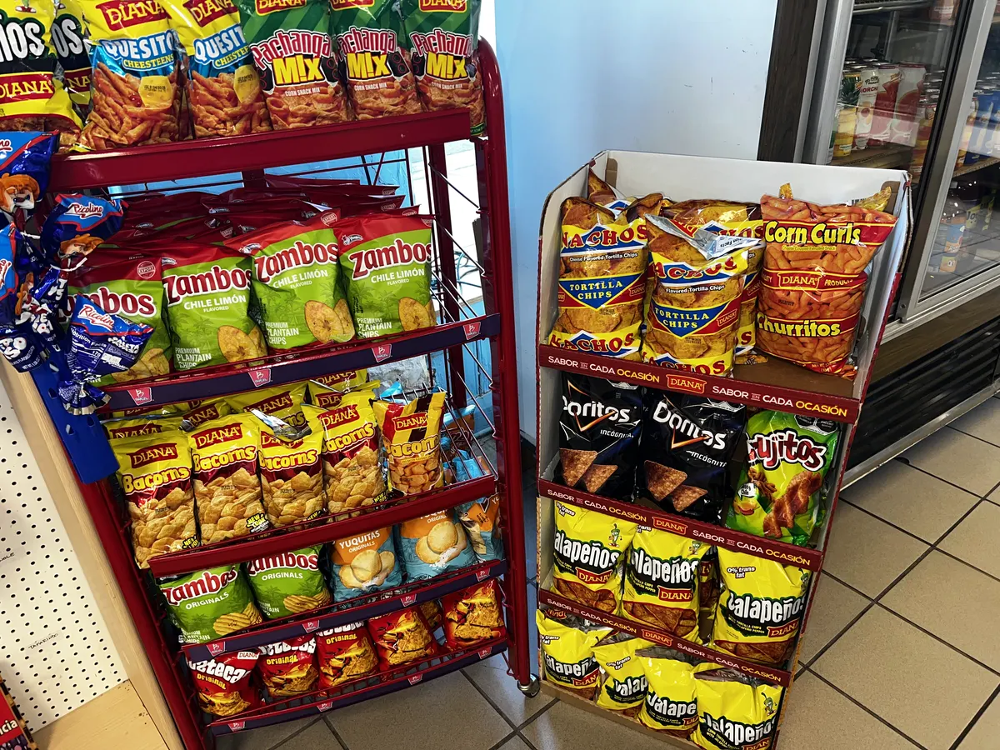

Items
Salvadoran & Central American groceries in Denver
Over 30 years importing the best products of El Salvador and Central America. From traditional foods to clothing and nostalgic items.

Items
Over 30 years importing the best products of El Salvador and Central America. From traditional foods to clothing and nostalgic items.
